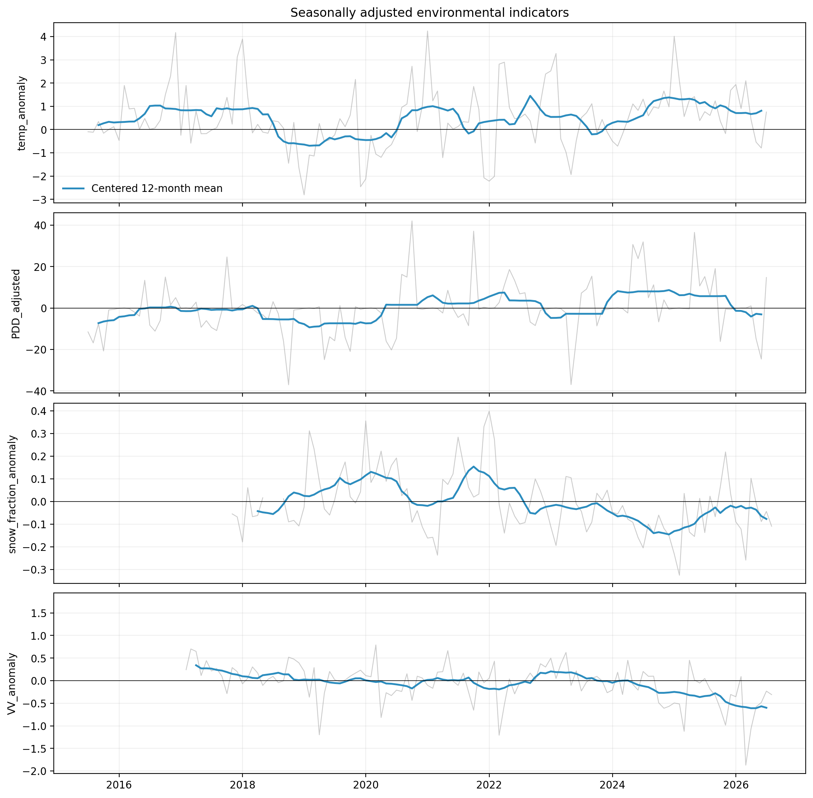
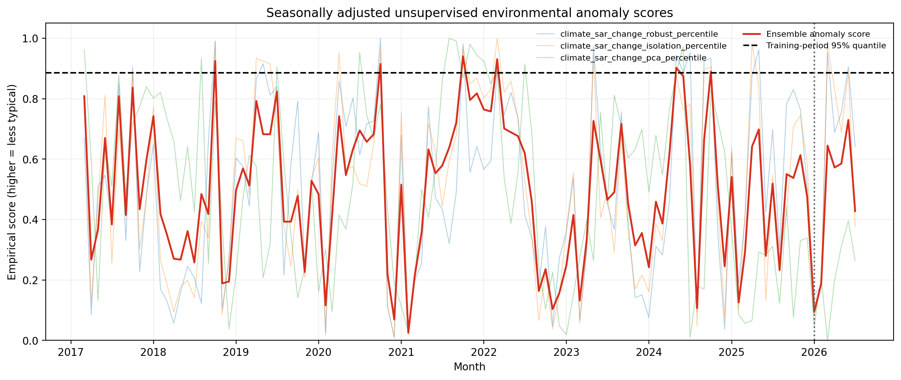
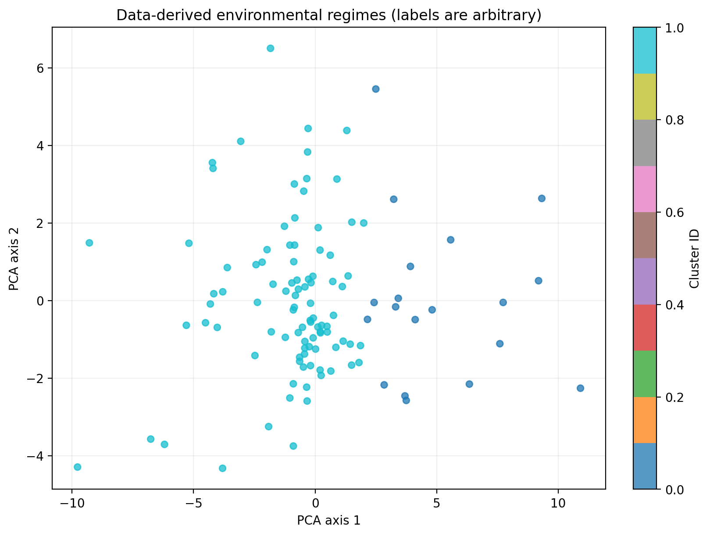
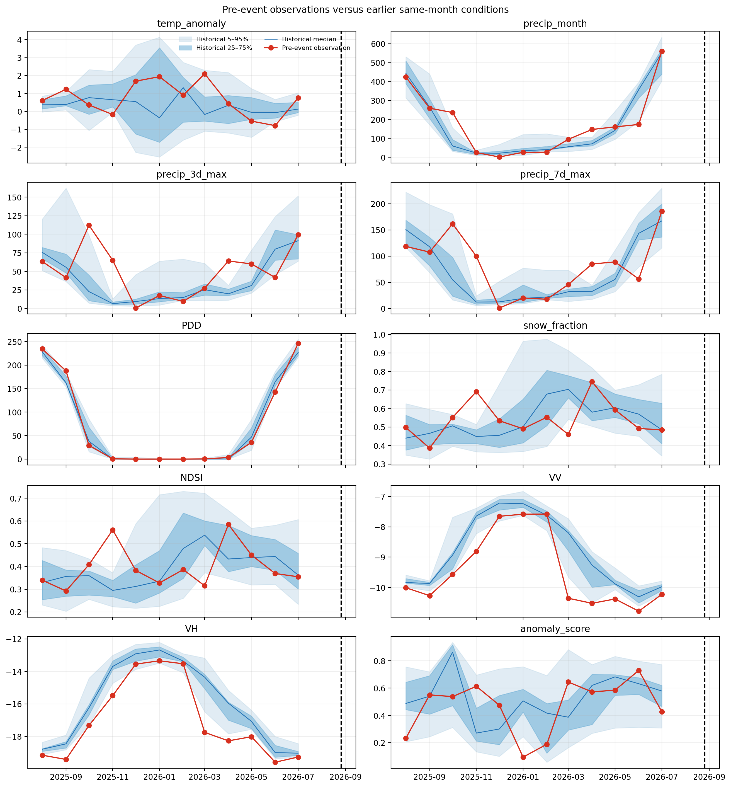
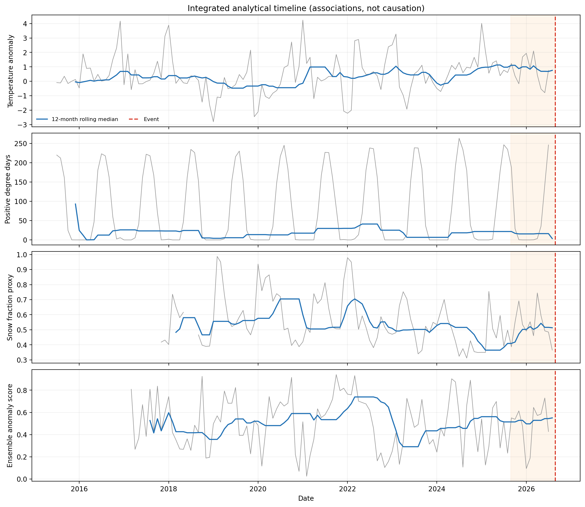

Responsible interpretation: This dashboard summarizes exploratory associations and screening products. It does not predict glacier collapse, establish causation, or provide a calibrated hazard assessment.
Event source: https://www.esa.int/Applications/Observing_the_Earth/Copernicus/Sentinel-2/Nepal_flash_flood_imaged_by_satellites
| RQ | Topic | Grade | Evidence type | Evidence summary |
|---|---|---|---|---|
| RQ1 | Long-term environmental change | EXPLORATORY | STATISTICAL ASSOCIATION | Trend diagnostics are available for 7 features; their slopes and uncertainty must be interpreted with coverage and sensor limitations. |
| RQ2 | Climate, snow, and melt trends | EXPLORATORY | STATISTICAL ASSOCIATION | 6 exploratory Mann–Kendall results are flagged at 0.05 before any multiple-testing adjustment; consult trend_summary.csv for effect sizes and OLS-HAC uncertainty. |
| RQ3 | Pre-event seasonal anomalies | EXPLORATORY | OBSERVATION AND STATISTICAL ASSOCIATION | 0 of 11 scored pre-event months exceeded the configured reference threshold; the maximum ensemble score was 0.730. This is a relative anomaly screen, not probability. |
| RQ4 | Satellite-observed event-associated change | DATA INSUFFICIENT | OBSERVATION | Sentinel-2 observations exist, but quantitative change was rejected by the optical coverage QA threshold. Same-track Sentinel-1 event metrics are also available. |
| RQ5 | Variables contributing to anomaly scores | EXPLORATORY | STATISTICAL ASSOCIATION | The most frequent largest standardized contributor among flagged months was PDD_adjusted (4 months). Use PCA loadings and all standardized inputs; a largest contributor is not a physical cause. |
| RQ6 | Detectable precursory combination | UNSUPPORTED | HYPOTHESIS | The unsupervised results can identify unusual combinations, but one event provides no test of precursor specificity, sensitivity, or predictive skill. |
| RQ7 | What cannot be concluded | STRONG | UNSUPPORTED CAUSAL INTERPRETATION | The workflow cannot establish collapse causation, calibrated hazard, predictive capability, displacement, event volume, or a validated debris footprint from these data alone. |





{kind=link}
{kind=link}
{kind=link}
{kind=link}
{kind=link}